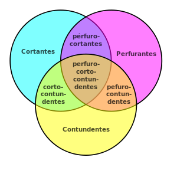
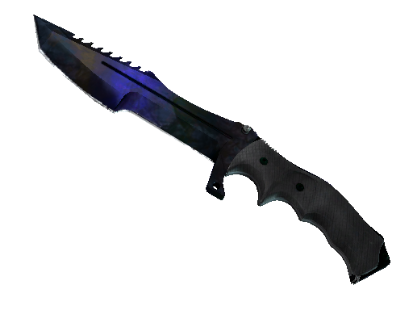
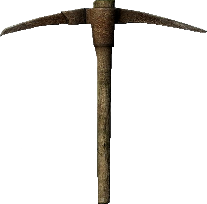
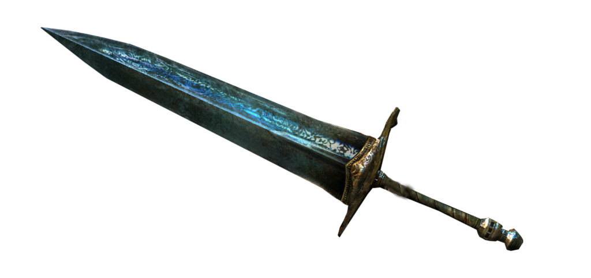

Armas brancas
Designa-se arma branca um objeto que possa ser utilizado agressivamente, para defesa ou ataque, mas cuja utilização normal é outra, geralmente para trabalho. Machados, facas e martelos são armas brancas; já outras armas como pistolas e rifles, por exemplo, não se incluem nessa categoria, pois são armas de fogo e a sua finalidade primária é ferir um oponente. Noutra definição, arma branca é todo objeto criado para ferir alguém. Independentemente de levar a morte ou não. Exs.: espada; soco inglês; chuço; punhal; nunchaco; etc. Nesta definição, objetos como faca, facão, foice, tesoura, etc., não são armas brancas em virtude de seu fim não ser ferir a alguém, mas funções diversas, como cortar carnes, legumes, madeira, panos, etc. Agora, se estes objetos forem utilizados para ferir a alguém, serão chamados de "instrumentos do/de crime".
As armas brancas se classificam em sete espécies: cortantes, perfurantes, perfurocortantes, contundentes, cortocontundentes, perfurocontundentes e perfurocortocontundentes. As armas brancas cortantes são os instrumentos que se caracterizam por uma borda delgada, denominada gume ou corte, afiada o bastante para seccionar tecidos por meio de uma pressão deslizante, que provocará maior talho à medida que a lâmina se desloca. Os exemplos clássicos são o aparelho de barbear(vulgo gilete) e a navalha de barbeiro. As perfurantes são os instrumentos terminados em ponta aguda, de secção circular ou poligonal. Servem para perfurar, não produzindo corte. A chave de fenda, um Formão e a agulha são os melhores exemplos. As contundentes atuam pela pressão de choque, tirando partido do momento linear causado pela sua massa ao serem brandidas. O taco de beisebol, o martelo, a soqueira e o rolo de massa e panela são exemplos. As perfurocortantes são os objetos constituídos por uma lâmina que apresenta uma ponta e um ou mais gumes. São utilizadas para perfurar e cortar. Exemplos ilustrativos são a faca, a adaga e a garrafa (quebrada). As cortocontundentes são as peças que atuam cortando, mas que por conta também de sua massa, acabam igualmente exercendo um efeito contundente ou esmagador sobre os tecidos atingidos. A guilhotina, o machado, o cutelo e a foice são bons exemplos para ilustrar a definição. As perfurocontundentes provocam perfuração, e dada a sua massa, podem fraturar o alvo. Exemplos disso são a picareta, a forquilha, a lança e o arpão. As perfurocortocontundentes podem cortar, perfurar e fraturar o alvo. Exemplos desse tipo de arma branca são o facão de selva, a katana, a montante, a cimitarra e a kusarigama.

Veja fotos de algumas armas brancas!


